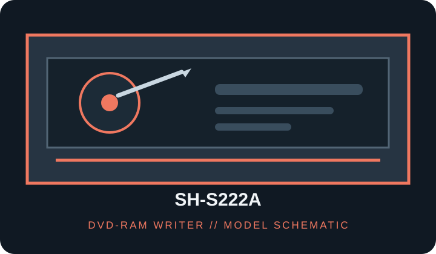

[ DVD-RAM WRITERS // IDENTIFIED MODEL ]
Samsung SH-S222A Super-WriteMaster DVD Writer
DVD-RAM capable optical writer; verify the exact suffix and media revision. Model-specific rated speeds, media and host requirements follow. Maximum rates are media- and mode-dependent, not guaranteed sustained throughput.

IDENTIFICATION: Match the complete drive label, OEM/SKU suffix and firmware to the cited model manuals; similar names may use different interfaces, supported media and speeds.
Documented specifications
| Catalog subcategory | DVD-RAM writers |
|---|---|
| Exact model / SKU | SH-S222A |
| Supported media formats | DVD-RAM, DVD-ROM, DVD±R/RW, DVD±R DL; CD-ROM, CD-R and CD-RW. Confirm media speed/revision and loading restrictions in the unit manual. |
| Rated read speeds | DVD-RAM up to 12×; DVD-ROM up to 16×, CD-ROM up to 48×. |
| Rated write speeds | DVD-RAM 12×; DVD±R up to 22×, DVD+R DL up to 16×, DVD-R DL up to 12×, DVD+RW 8×, DVD-RW 6×, CD-R up to 40×, CD-RW up to 32×. |
| DVD-RAM capability | DVD-RAM read/write up to 12×. |
| Interface / bay | E-IDE / ATAPI (PATA); internal 5.25-inch half-height tray drive. |
| Host compatibility | Internal 5.25-inch half-height PATA drive; requires an IDE/ATAPI 40-pin host channel, appropriate jumper configuration and peripheral power. Legacy PC optical drivers/recording software required; DVD-RAM packet-writing and UDF support depends on host OS/application. |
| Model distinction | SH-S222A is specifically the E-IDE/PATA version, not a SATA SH-S222B or SH-S223 variant. |
Host compatibility and use notes
- Internal 5.25-inch half-height PATA drive; requires an IDE/ATAPI 40-pin host channel, appropriate jumper configuration and peripheral power. Legacy PC optical drivers/recording software required; DVD-RAM packet-writing and UDF support depends on host OS/application.
- SH-S222A is specifically the E-IDE/PATA version, not a SATA SH-S222B or SH-S223 variant.
- DVD-RAM packet writing is not implied by hardware support alone; confirm UDF/filesystem and application support, compatible media version and cartridge restrictions.
- For preservation use, record exact label, firmware, media identifier, host controller/software, write mode and verification results; retain checksums and error logs.
Use only supported media; handle discs by the edge or center hole and store in a cool, dry case away from direct sunlight. Test and verify each recording before relying on it as an archive copy.
Sources
- Samsung SH-S222A manual listingSecond model-specific manual listing for the exact drive.
- Samsung SH-S222A manual mirrorSecond model-specific manual reference for cross-checking.